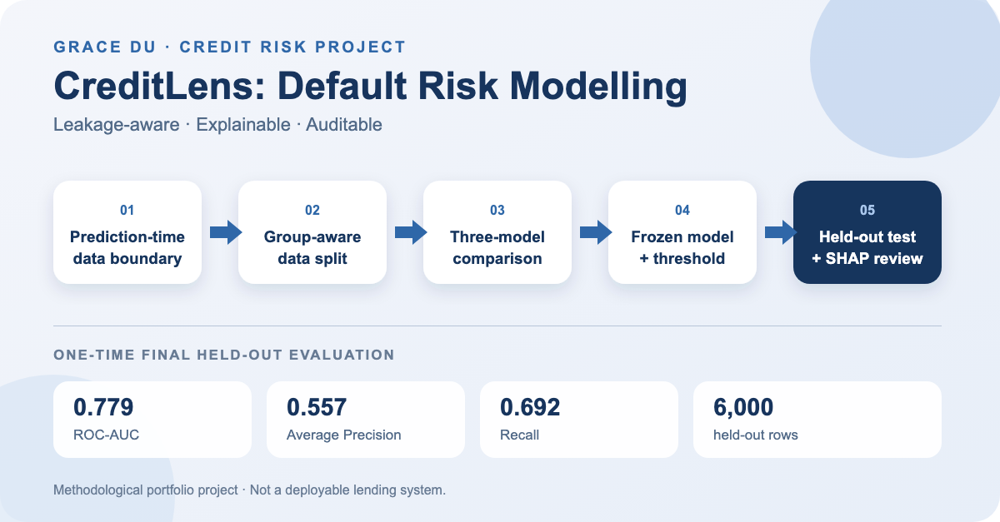

Leakage control
Prediction timing, excluded fields, group-aware partitions and training-only preprocessing are fixed before evaluation.
A methodological portfolio project comparing Logistic Regression, Random Forest and XGBoost under explicit data boundaries, group-aware validation and frozen final-test decisions.

CreditLens focuses on trustworthy modelling practice rather than a headline model score.
Prediction timing, excluded fields, group-aware partitions and training-only preprocessing are fixed before evaluation.
Model, preprocessing hash and validation-selected threshold are locked before the one-time held-out evaluation.
SHAP analysis, threshold trade-offs and labelled error cases describe associations without making causal claims.